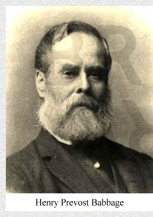

Charles Babbage's youngest son, Henry Prevost Babbage (1824 - 1918), served in the private army of the East India Company where he rose to the rank of major-general. This army played a notorious role in the suppression of the Indian Mutiny of 1857. Henry's autobiography unfortunately implicates him in the subsequent mass executions, an event that lead to the effective dissolution of the Company in 1858. He also accrued a fortune, ultimately returning to England in 1875. During a visit to England in 1872 he purchased a piece of land of about five acres in the district then known as "New Bromley". Henry built three manor houses of which two were named Dainton and Harleyford. Henry and his wife lived in Dainton. I imagine that Harleyford was intended for other members of his family which comprised three daughters and one son. The third house named Elsternwick had the address 88 Plaistow Lane. Today this is the address of the car dealer Ancaster Nissan Bromley. Reference to all the maps from 1895 to 1971 shows Elsternwick House near to the northern tip of the property.  Adjacent to Dainton, Henry Babbage constructed a coach house and stable. Presumably he had a horse and carriage. There was also an adjacent blacksmith's forge. Today these buildings comprise the ex-coach house residence which is the sole remaining construction due to Henry Babbage (not forgetting the original boundary wall which extends from the west of Dainton Close to the west and and north boundaries of the Harleyford estate). Reference to the 1909 map, for example, shows that the locations of Dainton and Harleyford were carefully planned. Each house occupies a central position within an approximately rectangular area, and each area is of similar size. Thus was the boundary between the Dainton and Harleyford estates established. I am curious about the walled-off areas shown on each of the south west corners of the Dainton and Harleyford estates. Were these ornamental gardens or, perhaps, kitchen gardens? Note that the driveways to both Dainton and Harleyford end in a loop. This was necessary because of the difficulty in making a horse and carriage move backwards.
1872 Henry Babbage visits England from India and purchases five acres of land in Bromley. 1873 Henry Babbage has constructed the manor houses Dainton and Harleyford. 1875 Henry Babbage returns from India to live permanently in England. 1885 Henry Babbage and his family move away from Bromley, but retain ownership of the property. 1906 Henry Babbage sells the property to W. J. Wilson, Esq. Following 1906 the property has a succession of owners, some with large families. Perhaps these owners lived in one of the manors while leasing or renting-out the other. The 1933 map shows that another building has been constructed in the south-west corner of the property. The 1937 map shows that a large building has been constructed in the vicinity of Harleyford manor. Subsequent to 1937 Dainton manor is demolished and replaced by Dainton Close. Built in a gracious 1930s architectural style, it has chimney pots and balconies. The original windows were of leaded-light design, today replicated by the double glazing. Date of construction? Probably 1938 or 1939. Click HERE to see the original tenancy brochure for the Dainton Close apartments. The rent for a three bedroom flat was 104 pounds per annum inclusive of constant hot water. A garage could be rented for five shillings per week (25 pence). Dainton Close compares well with the post-war Harleyford and Bishops Green. Their stark utilitarian design is mitigated by the spacious grass-and-trees location. They were probably constructed around 1967. The Harleyford and Bishops Green estates owe their existence to the planning and foresight of the development company Park Rutland Investments (London) Ltd. who remain landlord to the present day. Park Rutland created these estates in 1965 by the purchase of ten separate plots of land. It seems surprising that they were able to secure the simultaneous cooperation of so many sellers. Certain of these plots included land that had never belonged to Henry Babbage. Click HERE to see the 1968 map showing the dispositions of the ten plots of land. All buildings then existent on this land were demolished. This included the Harleyford manor and three Victorian houses in Upper Park Road. The last of these houses was larger than the others and had belonged to the Church of England since the mid-1930s. There is an unconfirmed rumour that originally it was an almshouse, but later it became the vicarage for St. John's church in Park Road. I can only guess that the church connection gave rise to the name "Bishops Green". Park Rutland Investments was incorporated in 1957 so was not involved in the construction or ownership of Dainton Close. Neither were they involved in the ownership of the original coach house which was converted into a residence.
HOME |